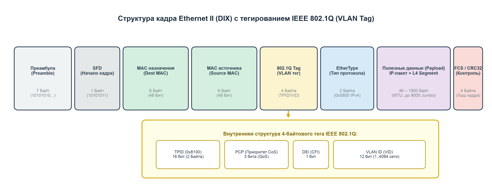
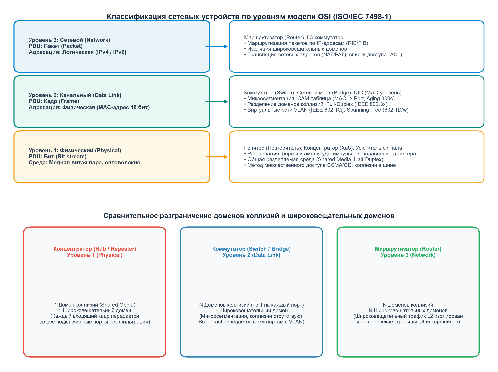
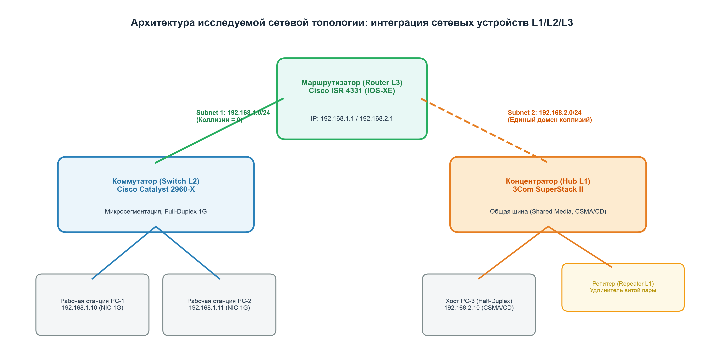
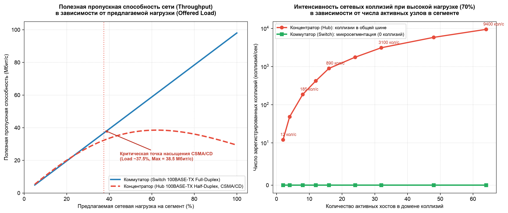
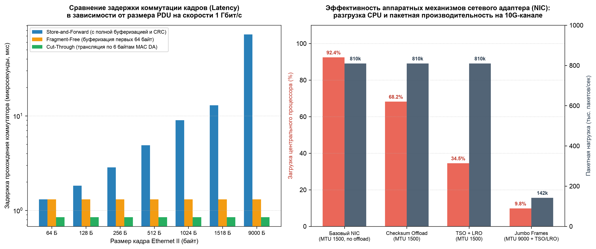

Изучаемое оборудование: концентратор (хаб), мост, коммутатор, маршрутизатор, репитер, усилитель сигнала, режимы работы, стандарты сетевых устройств, сетевые адаптеры (NIC) и технология Ethernet (IEEE 802.3).
Маршрутизатор (Router, Cisco ISR 4331), L3-коммутатор (Catalyst 3850)
Коммутатор (Switch, Cisco 2960-X), Мост (Bridge), NIC (MAC-модуль)
Концентратор (Hub, 3Com), Репитер (Repeater), Усилитель сигнала




